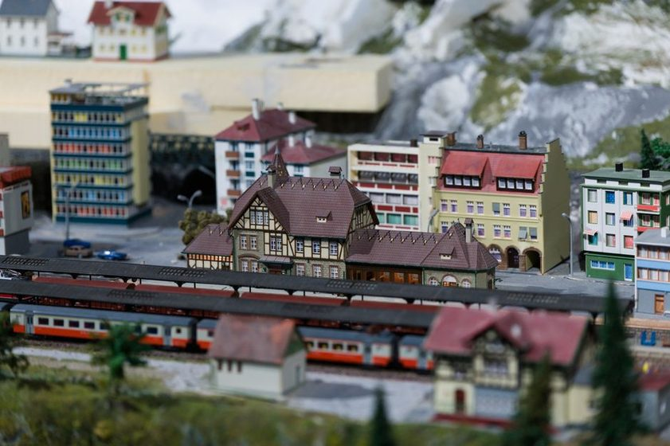

Point Work and the Case for a Headshunt
A headshunt looks like wasted track until the first time you need to run around a cut of wagons without blocking the main line.

Draw a track plan for a spare room and the first thing to go, almost every time, is the short stub of track past the far turnout that doesn't seem to lead anywhere. It has no siding at the end of it, no industry, no reason a car would ever sit there. Cutting it buys back eighteen inches for a curve that's fighting for radius, or for one more spur that will visibly hold a car. The stub gets cut, the plan gets built, and it isn't until the third or fourth operating session — engine on the wrong end of a train, main line needed by someone else, nowhere to put the locomotive while it changes ends — that the missing stub turns out to have been the one piece of track the whole plan depended on.
What a headshunt is actually for
A headshunt is a length of track beyond the last turnout of a yard or siding throat, long enough for an engine — or an engine and a car or two — to pull clear of the points it just came through. It doesn't connect to anything at its far end. Its only job is to give something room to get out of the way of itself. That sounds almost too simple to write down, but it's the whole case for it: without that clear length, an engine that needs to change ends on its train has nowhere to go except back out onto whatever track it just vacated, which on a small layout is usually the main line.
The run-around move it makes possible
The move a headshunt exists for is the run-around: engine pulls a cut of wagons up to a point, cuts off, uses a headshunt and a parallel siding to get around to the other end of the cut, and recouples facing the opposite way. Anywhere an engine needs to push instead of pull — setting out a car at an industry that only has a trailing-point connection the wrong way, or simply turning a train for the return trip — a run-around is the move that does it. Without a headshunt long enough to clear the points, that same move eats into the main, and every other train on the layout has to wait or work around it. The siding that earns its space gets its worth from the industry it feeds; a headshunt earns its space from the moves it unblocks everywhere else.
A headshunt never appears on anyone's waybill, and that's exactly why it gets cut first — and exactly why cutting it costs the most.
Sizing it so it actually clears
A headshunt that's too short is worse than no headshunt at all, because it invites the move without letting it finish — the engine pulls forward, fouls the points anyway, and the crew either backs out mid-maneuver or blocks the same route the headshunt was meant to protect. The rule of thumb is to size it for the longest cut of cars that will ever need to run around, plus the engine, plus enough margin that the last wheel clears the frog before anyone reverses direction. On a layout where trains are short by design, that number is smaller than it looks on paper — but it still has to be checked against the actual longest train the timetable calls for, not the average one.
| What has to clear | Typical headshunt length needed | What happens if it's short |
|---|---|---|
| Engine alone (light engine run-around) | Engine length plus a car length of margin | Usually forgiving — easiest case to fit |
| Engine plus one or two cars | Combined length plus margin for the frog | Tight but workable on most small layouts |
| Engine plus a full switching cut | Longest scheduled cut, measured, not guessed | Move stalls mid-headshunt; main line gets fouled |
| Engine changing ends at a terminus | Same as the longest train the timetable runs | Terminus can't turn its own trains without help |
Facing points, trailing points, and why direction matters
Point work is where a lot of this either pays off or falls apart. A turnout a train runs through in the trailing direction — the points closing behind it — is a forgiving move even under less than perfect control. The same turnout taken facing, points open ahead of the train, is where a stray car or a misaligned blade causes a derailment, and it's also where a headshunt matters most, because the run-around move exists specifically to turn a facing-point problem into a trailing-point one. An industry that can only be served facing one direction is exactly the kind of connection that makes a headshunt earn its keep rather than sit idle — and it's the same logic a switch list built for a first operating session has to account for before anyone even touches a locomotive.
A quick gut check
Walk your plan and count how many industries or yard tracks can only be reached facing one direction. Every one of those is a place where, sooner or later, an engine will need to get to the other end of its train. If the answer is more than zero and there's no headshunt anywhere on the plan, that's worth resolving before benchwork goes in, not after.
What it costs, and what it buys back
None of this makes a headshunt free. It's track that carries no industry, earns no scenic interest, and on a layout measured in single-digit feet of shelf, that's real space. The honest way to budget for one is to treat it the way you'd treat any other piece of infrastructure with a real job: worth the length it needs and not an inch more, positioned where it serves the most moves rather than the most convenient corner. A headshunt that only serves the yard throat is doing less work than one positioned so it also backs up a passing siding or a reversible spur. The space isn't wasted if the moves it enables wouldn't happen without it — which is the same test that decides whether any piece of track belongs on the plan at all.
- List every move on the layout that requires an engine to end up facing the opposite direction from where it started
- Check whether each of those moves currently has anywhere to happen other than the main line
- Measure the longest cut involved in any of those moves, not the average one
- Only then decide how much headshunt length the plan can actually spare
What tends to happen on a first-draft plan is the opposite order: the headshunt gets sized to whatever length is left over after everything else is drawn, which is usually not enough for anything but a light engine. Reversing that order — deciding what has to run around before deciding how much room is left to do it in — is a small change in sequence that changes what the plan can actually operate.
Worth remembering
This piece describes how run-around moves and headshunt length tend to interact on small home layouts, not a fixed formula. The right length depends on your longest train, your turnout geometry, and how often the move actually gets called for in your own timetable — there's no single number that fits every room.